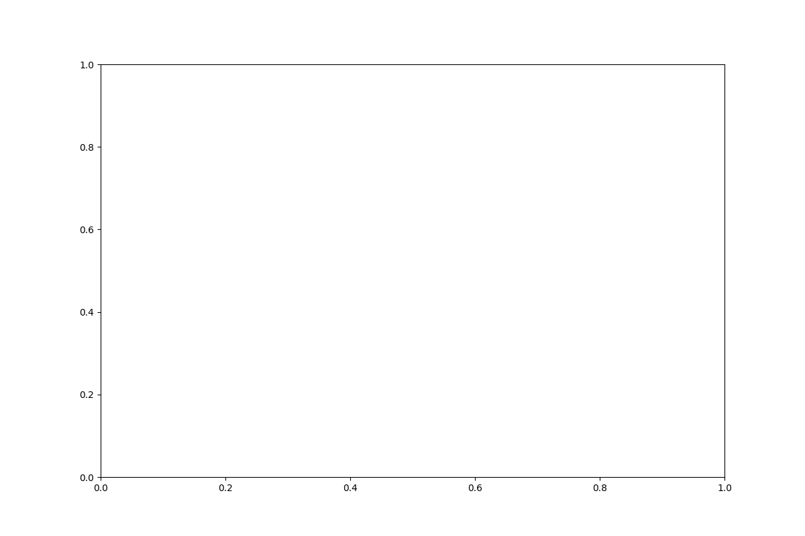
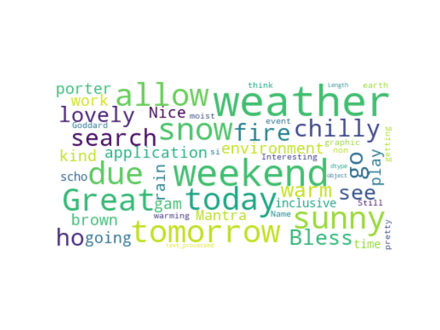

{% extends 'sidebar.html' %}

{% block content %}


<div style="height: 800px; width: 800px; margin-left: auto; margin-right: auto;">
    <canvas id="doughnut-chart"></canvas>
</div>

<div style="margin: 50px 0 50px 0;">
    <canvas id="weekday-chart" width="400" height="100"></canvas>
</div>

<div style="margin: 50px 0 50px 0;">
    <canvas id="each-day-chart" width="400" height="100"></canvas>
</div>




<script type="text/javascript">


    // receive processed json
    var lang_table = {{ lang_json|safe }};
    var lang_values = {{ lang_values|safe }};
    var lang_labels = {{ lang_labels|safe }};
    var day_labels = {{ day_labels|safe }};
    var day_values = {{ day_values|safe }};
    var each_day_labels = {{ each_day_labels|safe }};
    var each_day_values = {{ each_day_values|safe }};

    console.log(each_day_labels);
    console.log(each_day_values);


    const COLORS = [
    '#4dc9f6',
    '#f67019',
    '#f53794',
    '#537bc4',
    '#acc236',
    '#166a8f',
    '#00a950',
    '#58595b',
    '#8549ba'
    ];

    // console.log(day_json);
    // create doughnut chart
    const doughnut_chart = new Chart('doughnut-chart', {
    type: 'doughnut',
    data: {
    labels: lang_labels,
    datasets: [{
        data: lang_values,
        backgroundColor: COLORS,
    }]
    },
    options:{
        
        plugins:{
            legend:{
                position: 'top',
            },
            title:{
                display: true,
                text: 'Number of languages used in tweets',
            }
        }
    }

    });

    // bar chart shows difference of number of tweets on weekdays and weekends
    const week_chart = new Chart('weekday-chart', {
    type: 'bar',
    data: {
    labels: day_labels,
    datasets: [{
      data: day_values,
      backgroundColor: COLORS
    }]
    },
    options: {
        plugins:{
            legend: {display: false},
            title: {
            display: true,
            text: "number of tweets on weekdays vs. weekends"
            }
        }
        
    }
    });

    const each_day_chart = new Chart('each-day-chart', {
    type: 'bar',
    data: {
    labels: each_day_labels,
    datasets: [{
      data: each_day_values,
      backgroundColor: COLORS
    }]
    },
    options: {
        plugins:{
            legend: {display: false},
            title: {
            display: true,
            text: "number of tweets day of a week"
            }
        }
        
    }

    });

    
</script>


{% endblock %}

